Pakaian & Kuliner
Jelajahi dua pilar identitas budaya Jepang: keanggunan busana tradisional yang tak lekang oleh zaman dan mahakarya gastronomi yang memanjakan indera.
Wafuku: Seni Berbusana
Mencerminkan status, usia, dan musim melalui helai kain.

1. Kimono
Pakaian tradisional Jepang yang paling ikonik. Memiliki potongan lurus seperti jubah panjang dan diikat dengan sabuk lebar (obi). Dipakai untuk acara formal seperti pernikahan atau upacara minum teh.
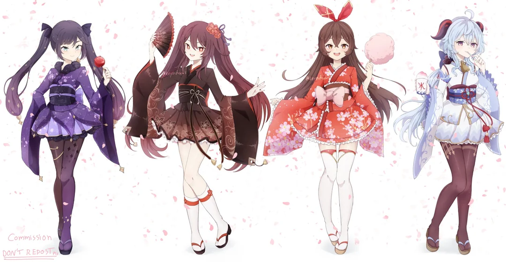
2. Yukata
Versi kasual dari kimono yang terbuat dari bahan katun tipis. Sangat populer dipakai saat musim panas, terutama saat menghadiri festival (matsuri) atau melihat kembang api.
3. Hakama
Pakaian menyerupai rok berlipit lebar atau celana kulot panjang yang dipakai di luar kimono. Biasanya dikenakan oleh pria, wanita saat wisuda, atau praktisi seni bela diri.
4. Haori
Jaket atau mantel sepanjang pinggul hingga paha yang dikenakan sebagai luaran kimono untuk memberikan kehangatan atau menambah kesan formal.
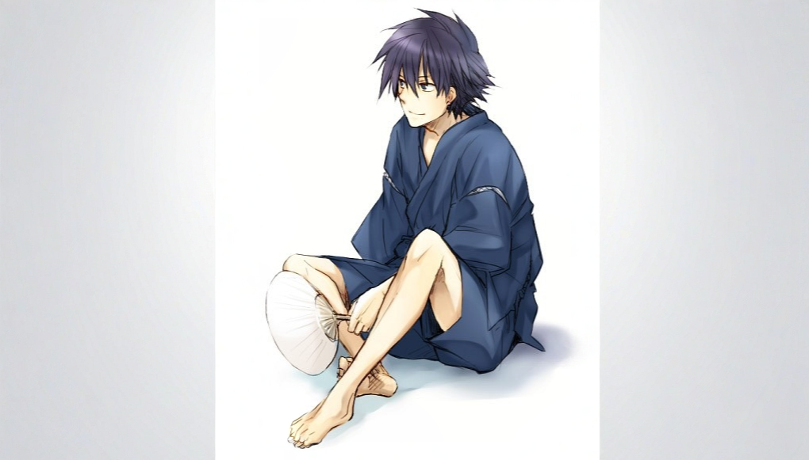
5. Jinbei
Pakaian santai musim panas yang terdiri dari setelan atasan berlengan pendek dan celana pendek. Biasanya terbuat dari katun atau rami dan sering dipakai di rumah.
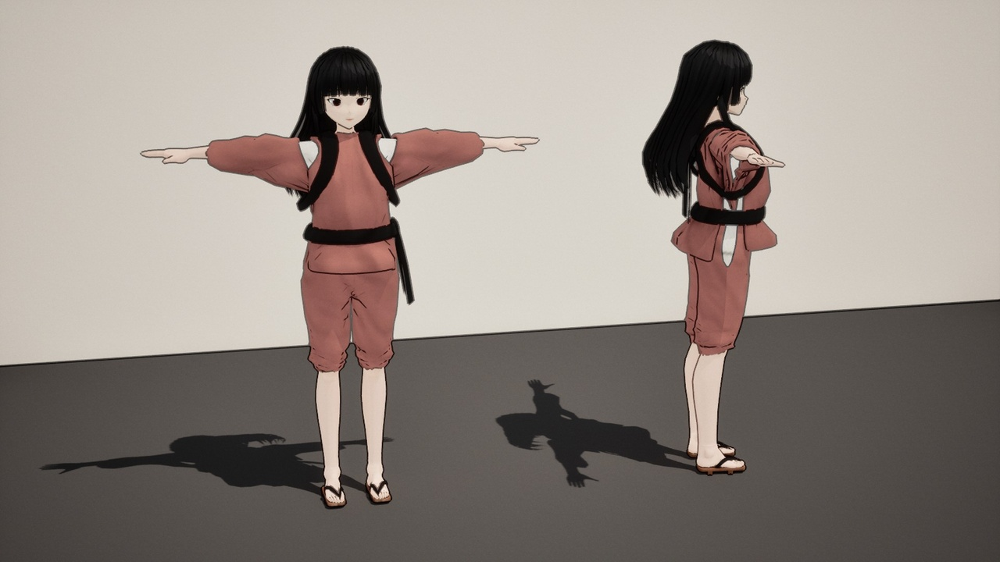
6. Happi
Mantel katun tradisional dengan lengan lurus yang biasanya menampilkan lambang keluarga atau logo festival di punggung. Sering dipakai oleh peserta festival.
7. Samue
Pakaian kerja tradisional yang aslinya dipakai oleh biksu Zen Jepang saat melakukan pekerjaan sehari-hari. Terdiri dari atasan dan celana panjang yang longgar.
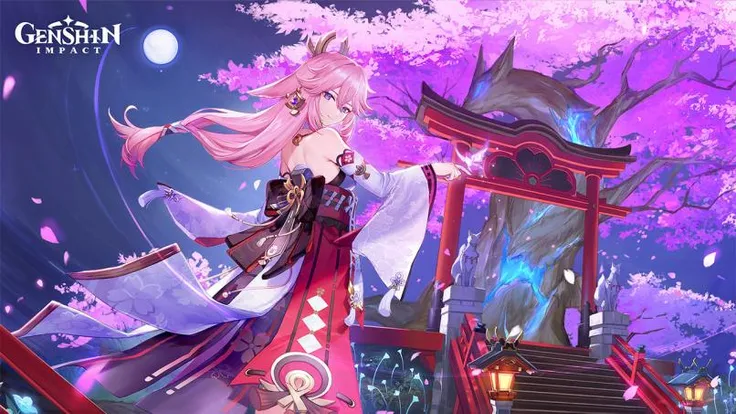
8. Uchikake
Kimono luar yang sangat formal, tebal, dan menjuntai panjang ke lantai. Pakaian ini khusus digunakan oleh pengantin wanita dalam upacara pernikahan tradisional.
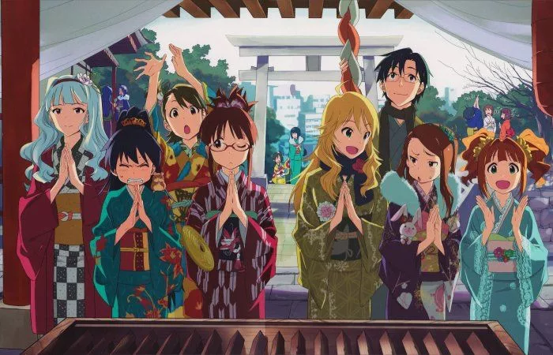
9. Furisode
Jenis kimono paling formal untuk wanita muda yang belum menikah. Ciri khas utamanya adalah bagian lengan yang sangat panjang dan menjuntai hingga ke pergelangan kaki.
10. Hanten
Jaket musim dingin tradisional yang berlapis kapas di bagian dalamnya. Pakaian ini dikenakan oleh masyarakat umum pada zaman Edo untuk menahan udara dingin.
Washoku: Harmoni Rasa
Keseimbangan antara estetika visual dan kesegaran bahan alam.

1. Sushi
Hidangan yang terbuat dari nasi yang dicampur cuka ringan, kemudian disajikan dengan berbagai makanan laut segar (seperti ikan salmon atau tuna mentah) dan telur.

2. Ramen
Mi kuah khas Jepang yang disajikan dalam berbagai jenis kaldu (shoyu, miso, tonkotsu), lengkap dengan topping irisan daging, daun bawang, rumput laut, dan telur rebus.
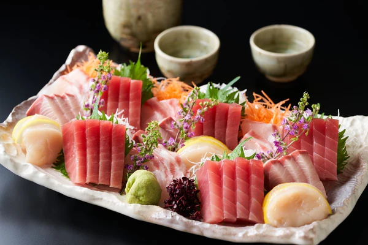
3. Sashimi
Potongan tipis daging ikan laut atau makanan laut mentah lainnya yang sangat segar, dinikmati hanya dengan dicelupkan ke dalam kecap asin (shoyu) dan wasabi.
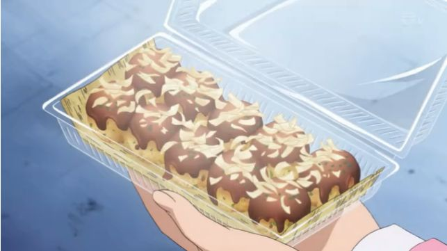
4. Takoyaki
Camilan bola kecil dari adonan tepung berisi potongan gurita (tako). Disajikan dengan saus takoyaki, mayones, bubuk rumput laut, dan serutan ikan cakalang kering.
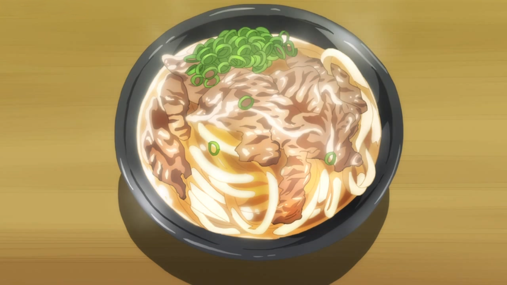
5. Udon
Mi Jepang yang terbuat dari tepung terigu dengan bentuk yang tebal dan kenyal. Biasanya disajikan dalam kuah dashi (kaldu ikan) yang hangat dengan berbagai macam topping.
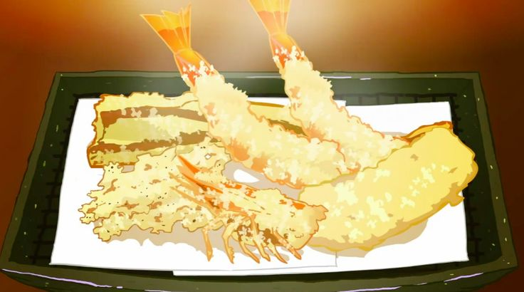
6. Tempura
Hidangan berupa sayuran segar atau makanan laut (paling sering udang) yang dibalut dengan adonan tepung ringan dan digoreng hingga sangat renyah.

7. Okonomiyaki
"Piza Jepang" atau panekuk gurih. Terbuat dari adonan tepung dan irisan kol, dicampur dengan berbagai bahan seperti daging atau makanan laut, lalu dipanggang di wajan datar.
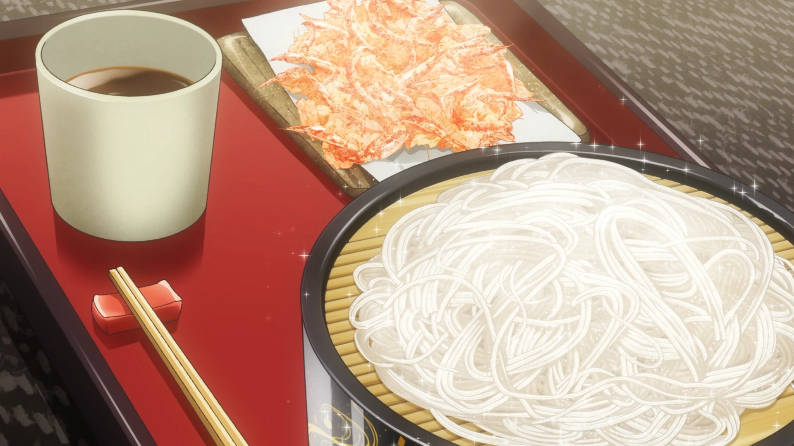
8. Soba
Mi tipis yang terbuat dari tepung gandum kuda (buckwheat), memberikan warna kecokelatan. Bisa disajikan panas dalam kaldu atau dingin dengan saus pencelup.
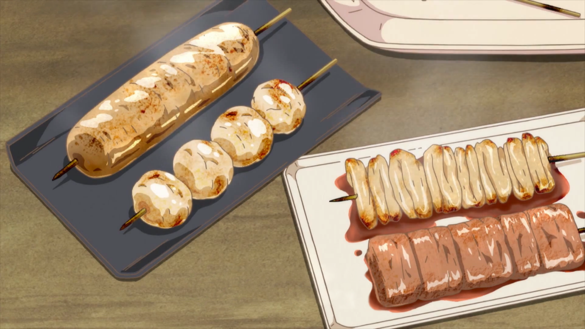
9. Yakitori
Sate khas Jepang berupa potongan daging ayam yang ditusuk bambu, dipanggang di atas arang dengan olesan saus manis gurih atau taburan garam.
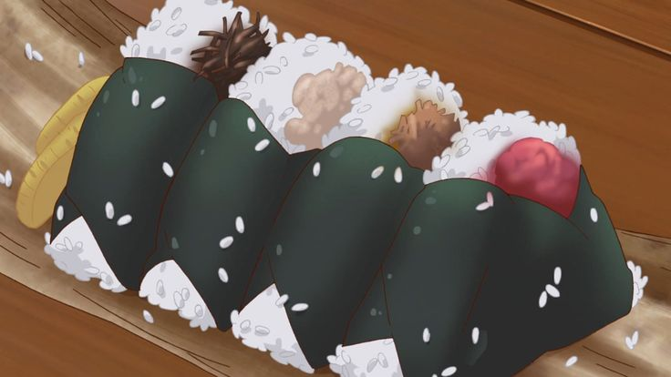
10. Onigiri
Nasi kepal Jepang yang dibentuk segitiga atau oval, biasanya dibungkus dengan nori (rumput laut kering) dan diisi dengan salmon panggang, tuna mayo, atau umeboshi.